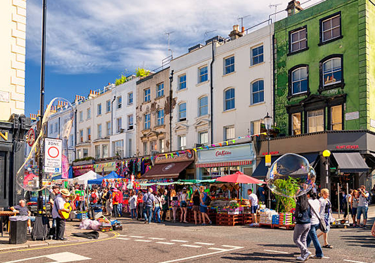
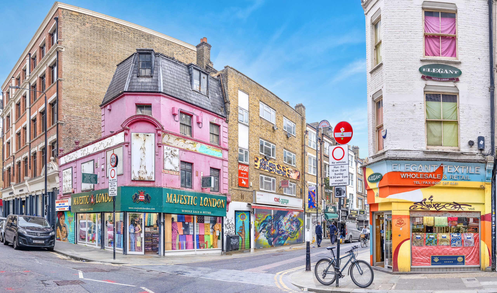
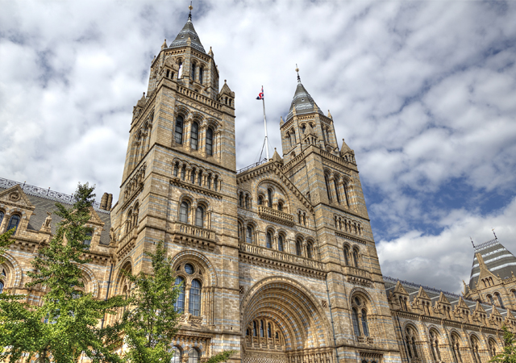
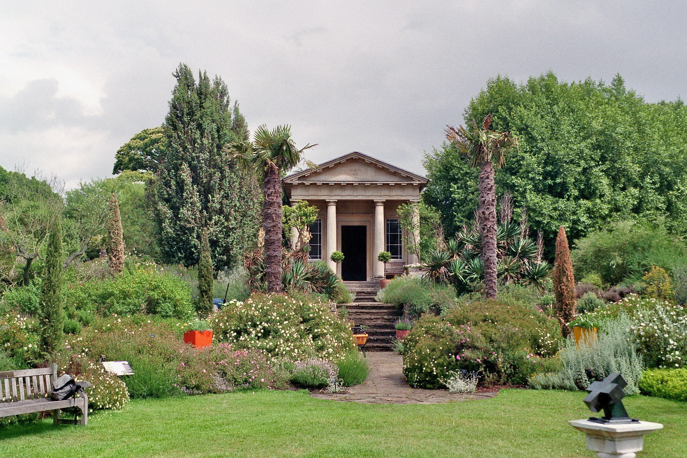
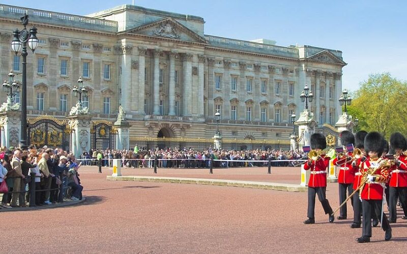
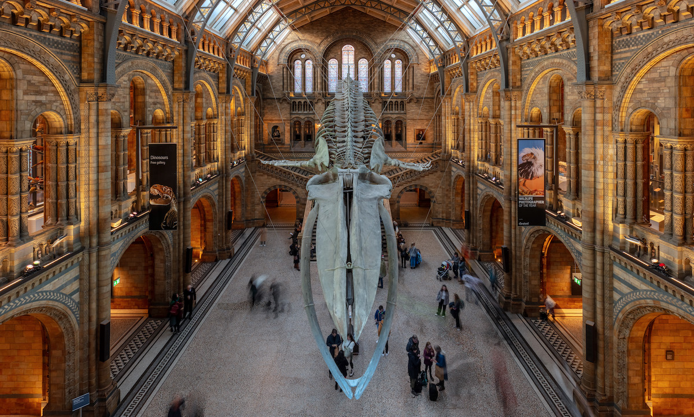
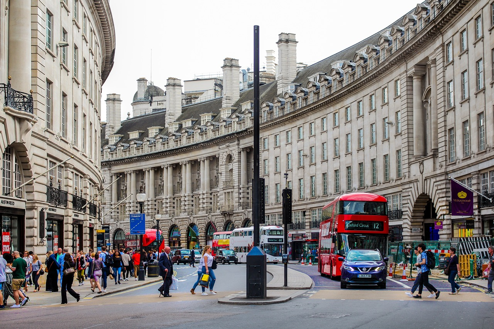
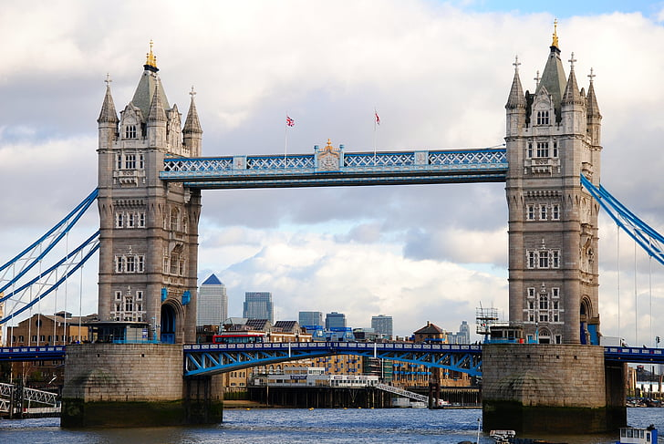
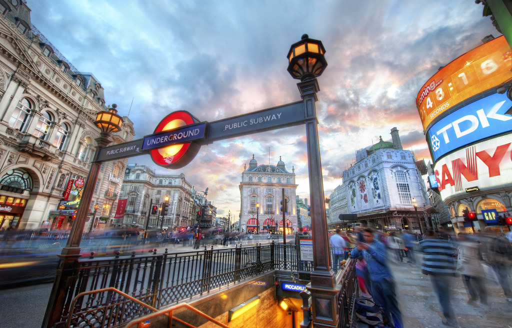

Bloomsbury: The Academic Hub
Bloomsbury is perfect for a quiet study.Home to UCL and the British Museum.
Vibe: Intellectual and Historic

Moving to London for your Master's? You have came to the right place. Transitioning to a new city can be overwhelming, but we have simplified the process. From exploring the unique personalities of London's top student neighborhoods to creating a personalized packing list, this guide is your one-stop resource for a successful move. Your jounrney to academic excellence and unforgettable experiences in London starts here!
Click a neighborhood to learn more!
Bloomsbury is perfect for a quiet study.Home to UCL and the British Museum.
Vibe: Intellectual and Historic
Camden is known for its vibrant arts, markets, and alternative music scene.
Vibe: Bohemian and Creative

Shoreditch is a hub for young professionals and creatives.
Vibe: Modern and Dynamic

Plan your move to London and pack your essentials!
Select a category and item to see your preparation checklist.
What is the name of the famous clock tower in London?






